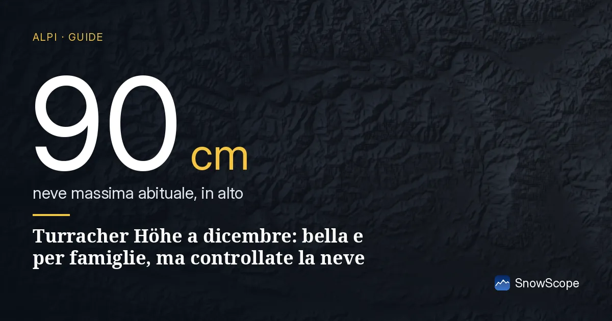

Turracher Höhe a dicembre: bella e per famiglie, ma controllate la neve
Il 15 dicembre tipico, Turracher Höhe mostra 23 cm di neve a mezza montagna (1792 m) su 46 inverni di registrazioni. Solo il 39 percento di quegli inverni aveva 30 cm o più nella settimana dal 15 al 21 dicembre, il che significa che inizio dicembre è una scommessa.
Le previsioni neve in tempo reale per Turracher Höhe nell'app SnowScopeAltezza neve, allerte powder e mappa 3D, gratis.
La sfida alla base
Il paese si trova su un passo alto a 1392 m, e questa quota è il punto debole a dicembre. Su inverni passati, il 15 dicembre tipico porta solo 10 cm alla base. Nella settimana dal 15 al 21 dicembre, solo il 4 percento degli inverni ha raggiunto 30 cm lì. La neve arriva tardi: il primo giorno usuale con 30 cm a mezza montagna è il 22 dicembre.
I decenni recenti mostrano meno neve a inizio dicembre. La quota di settimane natalizie con 30 cm a mezza montagna è scesa dal 67 percento nei primi 15 inverni (1980-81 a 1994-95) al 27 percento negli ultimi 15 (2011-12 a 2025-26). L'inverno scorso aveva solo 3 cm il 15 dicembre a mezza montagna, quindi i dicembre magri accadono.


Dove sciare se andate presto
Le piste superiori offrono migliori probabilità. Alla vetta (2193 m), il 15 dicembre tipico ha 34 cm, e il 70 percento degli inverni ha raggiunto 30 cm nella settimana natalizia. Il dislivello è 801 m su 34 km di piste e 15 impianti, quindi c'è spazio per lavorare in quota ed evitare il terreno nudo.
L'area sciistica è adatta alle famiglie con 15 impianti distribuiti su terreno dolce. Se andate prima del 22 dicembre, pianificate di passare più tempo alle quote più alte e accettate che le piste inferiori possono essere sottili o chiuse.
Spessore neve per data
A mezza montagna, la progressione è: 12 cm il 1 dicembre, 23 cm il 15 dicembre, 26 cm il 24 dicembre, 28 cm il 31 dicembre. Questi sono spessori tipici da inverni passati. In un anno nevoso (1 su 10), mezza montagna raggiunge 48 cm entro il 15 dicembre. In un anno magro, solo 4 cm.
La variabilità spiega perché dicembre qui è incerto. Potete trovare una base decente entro Natale, oppure trovare le rocce vicino alla superficie. Il quadro di tutta la stagione è modesto: un picco tipico a mezza montagna è 67 cm, e febbraio è solitamente il mese più nevoso, non dicembre.
Costi: bassa stagione fino alla vigilia di Natale
Lo skipass 2026-27 applica tariffe di bassa stagione dal primo giorno di apertura fino al 24 dicembre, poi stagione principale dopo. Lo skipass giornaliero adulti costa EUR 72,50 in entrambe le stagioni. Lo skipass di 6 giorni costa EUR 353 in bassa stagione ed EUR 381 in stagione principale, quindi il risparmio è su una settimana intera prima di Natale, non su giorni singoli.
Prenotate una settimana in bassa stagione e risparmiate EUR 28 su uno skipass di 6 giorni. Costruite flessibilità nelle vostre date: la neve a mezza montagna raggiunge 30 cm in media intorno al 22 dicembre.
Alternativa con ghiacciaio allo stesso prezzo
Mölltaler Gletscher si trova nella stessa provincia e costa circa lo stesso. Il suo impianto più basso è a 2103 m con 66 cm il 15 dicembre tipico, e il 91 percento degli inverni aveva 30 cm nella settimana dal 15 al 21 dicembre. Lo skipass di 6 giorni in bassa stagione era EUR 332 sul suo ultimo listino pubblicato (stagione 2025-26).
Per dicembre, il ghiacciaio vince su spessore neve e data di arrivo. Turracher Höhe vince su atmosfera familiare e piste a quote inferiori. Da gennaio in poi, la neve a mezza montagna a Turracher Höhe diventa più affidabile.
Consigli per sciatori
- Prenotate una settimana intera in bassa stagione (prima del 24 dicembre) per risparmiare EUR 28 su uno skipass di 6 giorni. Evitate giorni singoli a meno che la neve non sia confermata.
- Se visitate prima del 22 dicembre, sciare con l'impianto di vetta. A 2193 m, il 70 percento delle settimane natalizie aveva 30 cm rispetto al 39 percento a mezza montagna.
- Controllate lo spessore neve una settimana prima di viaggiare. I dicembre magri accadono; l'inverno scorso aveva solo 3 cm a mezza montagna il 15 dicembre.
- Pianificate più tempo al coperto a inizio dicembre. La luce diurna di dicembre è breve a questa latitudine, e la neve sottile può forzare la chiusura delle piste inferiori.
- Fuori pista dopo una bufera: consultate il bollettino valanghe ufficiale di Lawinenwarndienst Steiermark (lawinen.report).
Su questi numeri
Le altezze neve delle località sono la neve più alta sui pendii superiori alla data indicata; sono stime per un'area, non una misura in un punto. Le previsioni possono cambiare. Leggi sempre il bollettino valanghe ufficiale prima del fuoripista.
Bollettini valanghe ufficiali: Lawinenwarndienst Steiermark
Cita questo articolo
Per ricerca, didattica o stampa: numeri e grafici sono liberamente riutilizzabili con licenza CC BY 4.0 citando così.
SnowScope (2026), Turracher Höhe a dicembre: bella e per famiglie, ma controllate la neve, https://snowscope.app/blog/it/2026/11/turracher-hoehe-december-skiing-honest-snow-check.html, consultato il 2026-11-14
SnowScope (Atlas Labs). (2026, November 14). Turracher Höhe a dicembre: bella e per famiglie, ma controllate la neve. SnowScope snow reports. https://snowscope.app/blog/it/2026/11/turracher-hoehe-december-skiing-honest-snow-check.html
BibTeX
@misc{snowscope2026turracherhoehedecembersk,
author = {{SnowScope (Atlas Labs)}},
title = {Turracher Höhe a dicembre: bella e per famiglie, ma controllate la neve},
year = {2026},
month = nov,
howpublished = {\url{https://snowscope.app/blog/it/2026/11/turracher-hoehe-december-skiing-honest-snow-check.html}},
note = {Published 2026-11-14 20:14 UTC; accessed 2026-11-14}
}· CC BY 4.0 · Metodi, dati e strumenti →
Turracher Höhe: neve e temperatura per quota, quest'inverno vs lo scorso (strumenti) →
Segui Turracher Höhe
Gratis: un messaggio quando arriva la neve e il meteo ogni mattina.